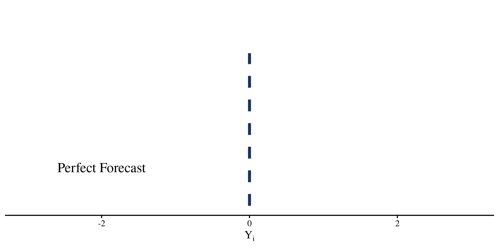

Measuring Forecasting Proficiency: A Psychometric Approach
May 4, 2026
The Forecasting Proficiency Test (FPT)
The Forecasting proficiency test (Himmelstein et al., 2025)

at Georgia Tech, PQP graduate
Comparison of PEF and QEF Question
Quantile elicitation format

Survey link


Thoughts?


Psychometrics?
One of the goals of psychometrics is uncovering the probabilistic process that causes item responses.
In general, (most) psychometric models are statistical models that predict item responses, and have the following properties:
- Include parameters defining item properties
- Include parameters defining person properties
- Allow for some randomness in item responses (random measurement error)
Item response theory (IRT) models include all of these components.

Priors


Software
All models were estimated in python (Version 3.11) with pymc (Abril-Pla et al., 2023) by using nutpie, an HMC sampler written in rust that improves on stan’s sampling algorithm (Seyboldt et al., 2026).
Plotting and analyses where done in R (Version 4.5.2).

pymcEstimated Item Parameters

Posterior Predictive Checks

\(\theta\) Distribution

Predicting Out of Sample Accuracy
As per the study pre-registration, Waves 1 and 7 responses were treated as outcome and Waves 2,4, 6 were treated as predictors.
* SS stands for S-Score

References
Abril-Pla, O., Andreani, V., Carroll, C., Dong, L., Fonnesbeck, C. J., Kochurov, M., Kumar, R., Lao, J., Luhmann, C. C., Martin, O. A., Osthege, M., Vieira, R., Wiecki, T., & Zinkov, R. (2023). PyMC: A modern, and comprehensive probabilistic programming framework in Python. PeerJ Computer Science, 9, e1516. https://doi.org/10.7717/peerj-cs.1516
Himmelstein, M., Zhu, S. M., Petrov, N., Karger, E., Helmer, J., Livnat, S., Bennett, A., Hedley, P., & Tetlock, P. (2025). The Forecasting Proficiency Test: A General Use Assessment of Forecasting Ability. OSF. https://doi.org/10.31234/osf.io/a7kdx_v2
Seyboldt, A., Carlson, E. L., & Carpenter, B. (2026). Preconditioning Hamiltonian Monte Carlo by minimizing Fisher Divergence (No. arXiv:2603.18845). arXiv. https://doi.org/10.48550/arXiv.2603.18845
Slides link